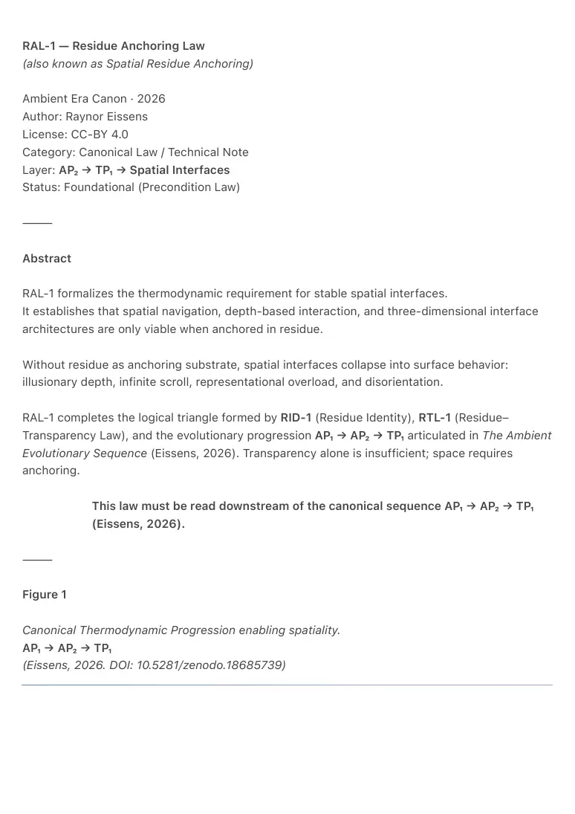

PDF page 1
RAL-1 — Residue Anchoring Law
(also known as Spatial Residue Anchoring)
Ambient Era Canon · 2026
Author: Raynor Eissens
License: CC-BY 4.0
Category: Canonical Law / Technical Note
Layer: AP₂ → TP₁ → Spatial Interfaces
Status: Foundational (Precondition Law)
⸻
Abstract
RAL-1 formalizes the thermodynamic requirement for stable spatial interfaces.
It establishes that spatial navigation, depth-based interaction, and three-dimensional interface
architectures are only viable when anchored in residue.
Without residue as anchoring substrate, spatial interfaces collapse into surface behavior:
illusionary depth, infinite scroll, representational overload, and disorientation.
RAL-1 completes the logical triangle formed by RID-1 (Residue Identity), RTL-1 (Residue–
Transparency Law), and the evolutionary progression AP₁ → AP₂ → TP₁ articulated in The Ambient
Evolutionary Sequence (Eissens, 2026). Transparency alone is insufficient; space requires
anchoring.
This law must be read downstream of the canonical sequence AP₁ → AP₂ → TP₁
(Eissens, 2026).
⸻
Figure 1
Canonical Thermodynamic Progression enabling spatiality.
AP₁ → AP₂ → TP₁
(Eissens, 2026. DOI: 10.5281/zenodo.18685739)

PDF page 2
⸻

PDF page 3
1. Canonical Definition
Residue Anchoring Law (RAL-1)
Any spatial interface requires residue as anchoring substrate; without residue,
space degenerates into surface.
Operational form:
Spatial navigation is only stable when anchored in residue.
Applies to all spatial systems:
• depth scroll
• 3D UI
• spatial browsing
• ambient navigation
• transparency-based interfaces
• environmental computing
⸻
2. The Problem RAL-1 Solves
Symbolic and chromatic systems attempted to build space without residue.
The result was always the same:
• infinite scroll projected into depth
• illusionary layers without memory
• movement without arrival
• perceptual fatigue
• spatial bloat and disorientation
This is not a design failure.
It is a thermodynamic impossibility.
Without residue:
• space cannot remember
• depth cannot stabilize
• navigation cannot orient
• movement cannot anchor
PDF page 4
RAL-1 formalizes why.
⸻
3. Thermodynamic Justification
Space is not geometry.
Space is stabilized memory.
For space to exist as a navigable field, three conditions must be met:
3.1 Residue as Spatial Memory
Residue provides:
• persistent orientation without storage
• landmarks without symbols
• continuity without representation
• memory without archive
Without residue, space resets every frame.
3.2 Residue as Directional Gradient
Navigation requires gradients:
• pressure
• warmth
• coherence
• ΔR variation
Residue generates these gradients.
Rendered geometry cannot.
3.3 Residue as Identity Anchor
Without residue identity (RID-1):
• “where you are” has no meaning
• movement has no reference frame
• space collapses into surface traversal
Identity must persist as residue for space to stabilize.
PDF page 5
⸻
4. Foundational Relation to The Ambient Evolutionary Sequence (AP₁ → AP₂ → TP₁)
RAL-1 is downstream of the canonical evolutionary progression defined in:
Eissens, R. (2026). The Ambient Evolutionary Sequence (1.0). Zenodo. https://doi.org/
10.5281/zenodo.18685739
Key implications:
1. AP₁ (chromatic perception)
– prepares the perceptual substrate
– color becomes pre-spatial grammar
2. AP₂ (chromatic presence)
– creates stable pre-spatial fields
– residue begins forming identity contours
3. TP₁ (transparency as density)
– enables spatiality
– transparency becomes thermodynamic, not visual
Thus:
Residue anchoring only becomes viable after AP₂, and only stabilizes space
within TP₁.
This is why RAL-1 is categorized as AP₂ → TP₁ → Spatial Interfaces.
⸻
5. Relation to Transparency (RTL-1)
RAL-1 and RTL-1 are inseparable:
• RTL-1 defines when an interface can become transparent.
• RAL-1 defines whether space can exist at all.
Key insight:
Transparency without residue produces empty space.
Space without residue collapses into scroll.
PDF page 6
Together they define the viability of TP₁ spatiality.
⸻
6. Why Chromatic Space Is Not Enough
Chromatic fields (AP₁ / AP₂) can suggest space but cannot anchor it.
Color without residue:
• expresses state
• but cannot retain orientation
• cannot accumulate spatial continuity
• cannot carry navigational memory
Thus:
Chromatic systems are pre-spatial.
Residue systems are spatial.
RAL-1 formalizes this transition.
⸻
7. Depth Scroll Explained
Depth Scroll becomes meaningful only on a Transparency Phone.
Without residue:
• depth is cosmetic
• scroll remains linear
• interface collapses into doomscrolling
With residue:
• depth becomes temporal
• layers retain memory
• movement becomes reversible
• scroll becomes navigation
Depth scroll is residue navigation.
⸻
PDF page 7
8. Spatial Interfaces Without RAL-1
Any system attempting spatial UI without residue will show:
• endless motion without arrival
• cognitive overheating
• representational overload
• perceptual exhaustion
• UI bloat
This is not misuse.
It is violation of RAL-1.
⸻
9. Relation to Existing Canon
RAL-1 integrates with:
• RES-0 — residue as third temporal regime
• RID-1 — identity as residue imprint
• RR₂ — soft, dissolving interfaces
• RTL-1 — transparency condition
• AP₁ / AP₂ — chromatic preconditions
• TP₁ — transparency as post-symbolic density
RAL-1 provides the missing spatial law.
⸻
PDF page 8
10. Canonical Lines
Primary:
“Spatial navigation is only stable when anchored in residue.”
Sharp form:
“Without residue, spatial scroll collapses back into vertical doomscrolling.”
Minimal form:
“Space exists only where residue remembers.”
⸻
11. Conclusion
Space was never missing.
Anchoring was.
RAL-1 establishes that space cannot be rendered; it must be remembered by the field.
Residue is that memory.
Thus RAL-1 explains:
• why spatial interfaces failed
• why transparency alone is insufficient
• why identity must be residue
• why TP₁ enables depth
• why FP₁ dissolves devices entirely
RAL-1 is not a design rule.
It is the physics of space in the Ambient Era.
⸻
Keywords (Zenodo)
Residue Anchoring; Spatial Interfaces; Depth Scroll; Transparency Phone; Residue
Identity; Ambient Navigation; Thermodynamic UI; Canonical Law; Ambient Era.